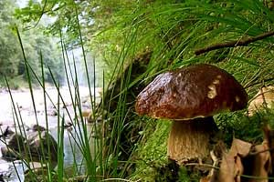
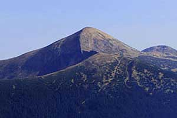
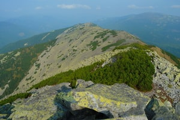

Чому варто піти саме з нами?
Наші правила:
- маленькі групи до 12 осіб;
- обов'язкова медична страховка включена у вартість;
- інструктора дають докладні поради з підготовки до походу;
- незвичайні проходження маршрутів і затишні стоянки навіть на більш людних стежках;
- лояльність до фотографів
- лояльність до новачків
Ми не пропонуємо звичайні тури.
Ми пропонуємо дивовижні відкриття в самих звичних і в зовсім несподіваних куточках Землі.
Вибирайте з 70 маршрутів
або плануйте свій.
Найблищі походи, приєднуйтесь!
|  |  |  |
|---|---|---|
| 24 серпня - 29 серпня | 26 серпня - 26 серпня | 28 серпня - 2 вересня |
| Похід на Чорногірський хребет | Одноденне сходження на Говерлу | Кам'яними схилами Горган |
| Похід по найвищому в Карпатах хребку запам'ятається Вам зачаровуючими пейзажами, неймовірним зоряним небом... | Похід на Говерлу за один день, в будь-який час року. Професійні гіди, які практично живуть на Говерлі... | Хочете піти в похід по самим диких і древніх горах в Карпатах? Тоді варто відправитися в похід на Горгани... |
| Замовити! |
Піти у похід
Раніше щоб піти в похід, наприклад на Кавказ, необхідно було звертатися в туристичний клуб, регулярно виїжджати в тренувальні піші походи вихідного дня, і тільки через кілька років активної туристичної життя можна було відправитися в по-справжньому складний гірський категорійний похід.
Проводилися такі походи на Кавказі в Північному Приельбруссі, на Алтаї, Памірі і інших високих горах.
Зараз все набагато простіше - все вирішує інтернет.
У відповідь на запити «хочу в похід» або «куди піти в похід» Вам відкриється кілька десятків сайтів різного напрямку.
Кожен пропонує щось своє: походи по Туреччині, сходження на Казбек в Грузії, трекінг в Непалі, гірські походи на Кавказ, піші походи в Карпати та інші напрямки.
Можна зустріти пропозиції зайнятися альпінізмом, походи з мотузками, гірські фото-тури і навіть походи для схуднення.
Але найголовніше питання у тому, як вибрати туристичного оператора.
І скільки авторитетної НЕ буде фірма займається плануванням подорожей і організацією трансферу, вирішальним в кожному поході є провідник.
Саме особисті якості інструктора, гірського гіда визначають в поході все: безпека, навантаження, відпочинок.
А в нескладному поході по Верхньої Сванетії, подорожі по Лікійської стежці, в Криму хороший провідник розповість багато про місцевість, флору, фауну.
Тому завжди вибирайте хорошого провідника для комерційного і індивідуального походу!